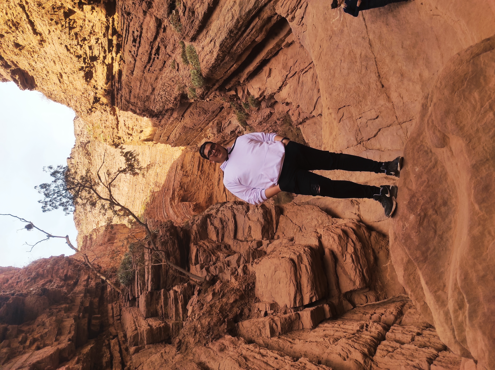

Acerca de mí
Actualmente trabajo en el ámbito de la Policía y de la Educación. Soy Técnico Universitario en Administración de Sistemas y Software Libre y me encuentro finalizando la Licenciatura en Tecnología Educativa, actualmente en etapa de tesis. Mi formación y mi experiencia laboral me han permitido mantener un vínculo constante con la tecnología y continuar ampliando mis conocimientos en esta área.
Mi interés por el Desarrollo Web
Decidí estudiar la Tecnicatura Universitaria en Desarrollo Web con el objetivo de aprender más sobre programación y ampliar mi formación tecnológica. Me interesa especialmente adquirir conocimientos relacionados con el desarrollo de aplicaciones y videojuegos. A futuro, espero que esta formación me permita ampliar mis posibilidades laborales y desenvolverme en nuevos ámbitos vinculados con el desarrollo de software.
